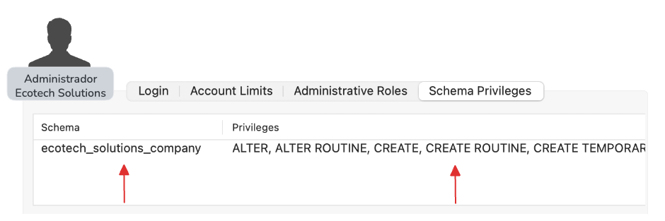

#### Ingreso de credenciales root
```terminal
=== Inicialización de Base de Datos ===
Archivo SQL: ~/gestion-empleados-por-capas/sql/schema.sql
...
Usuario root MySQL: root
Contraseña root MySQL: ********
...
🔑 Credenciales para conectar desde la aplicación:
Usuario: ecotech_admin
Contraseña: Admin123!
```
Administrador
Con el administrador de Ecotech configurado, se puede ingresar al sistema.

Tiene todo los privilegios sobre la base de datos de la compañia
arquitectura de software
Nuestra solución utiliza una Arquitectura N-Capas, organizada en módulos independientes con una separación clara de responsabilidades.
Patrones arquitectónicos
MVC
N-capas
Microservicios
Hexagonal
DAO
DTO
Singleton
Observer
Patrones de diseño
Planificación del Proyecto
CONEXIÓN SEGURA
src/persistencia/conexion.py
import pymysql
from pymysql.connections import Connection
from configuracion.entorno import DB_HOST, DB_NAME
from configuracion.auditoria import logger_bd
class Conexion:
def __init__(...) -> None:
ENCAPSULAMIENTO
src/persistencia/conexion.py